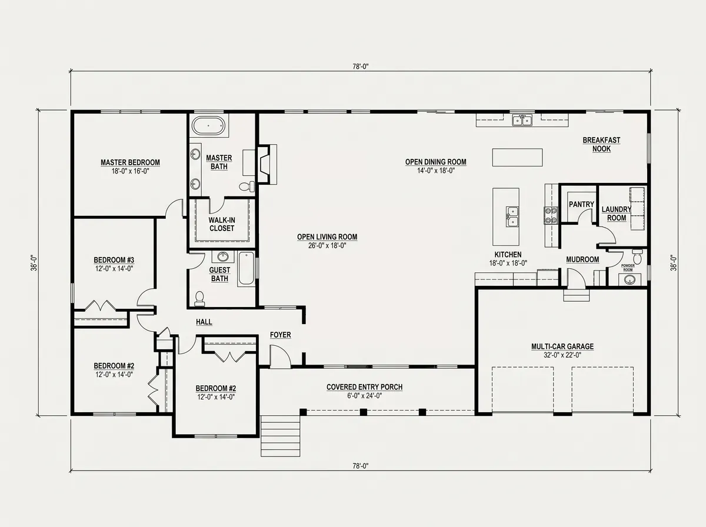
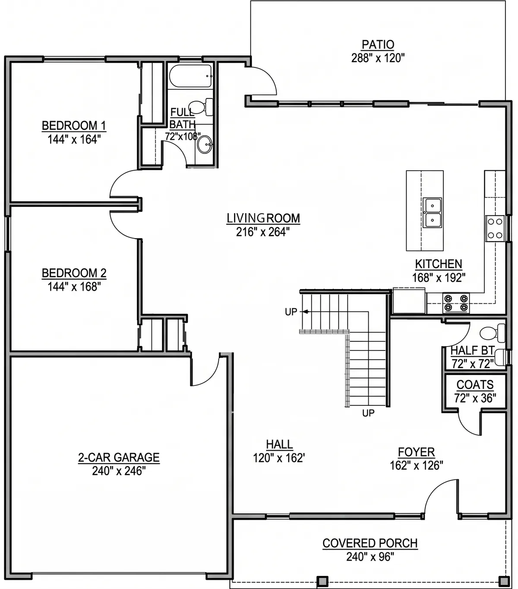
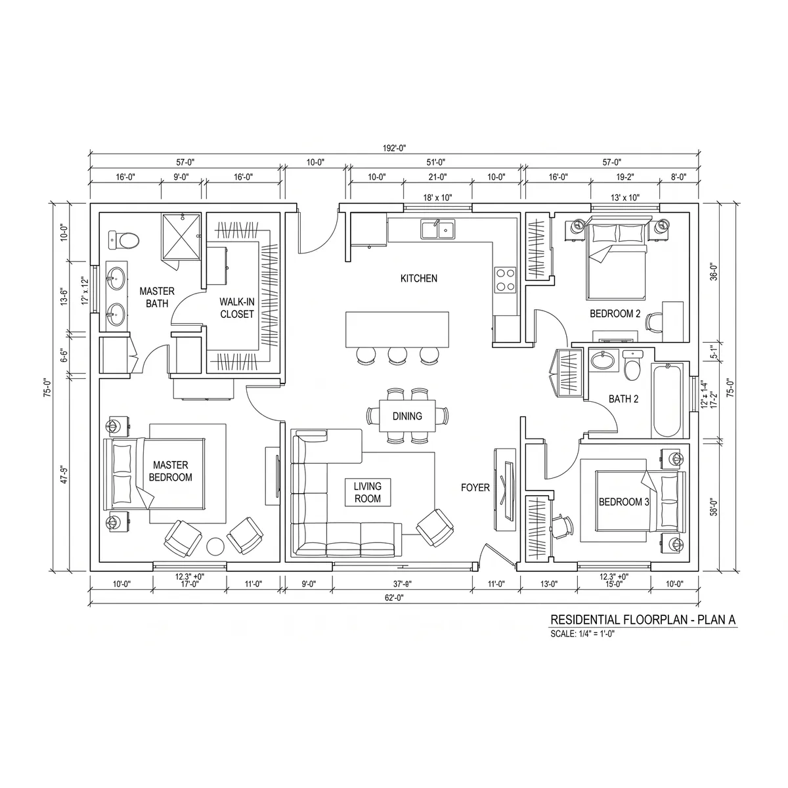
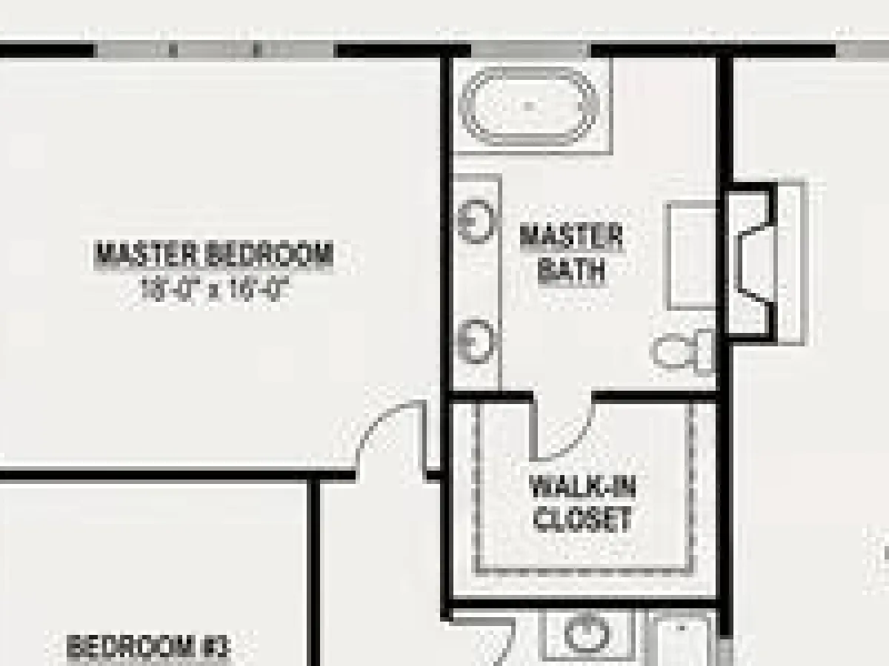
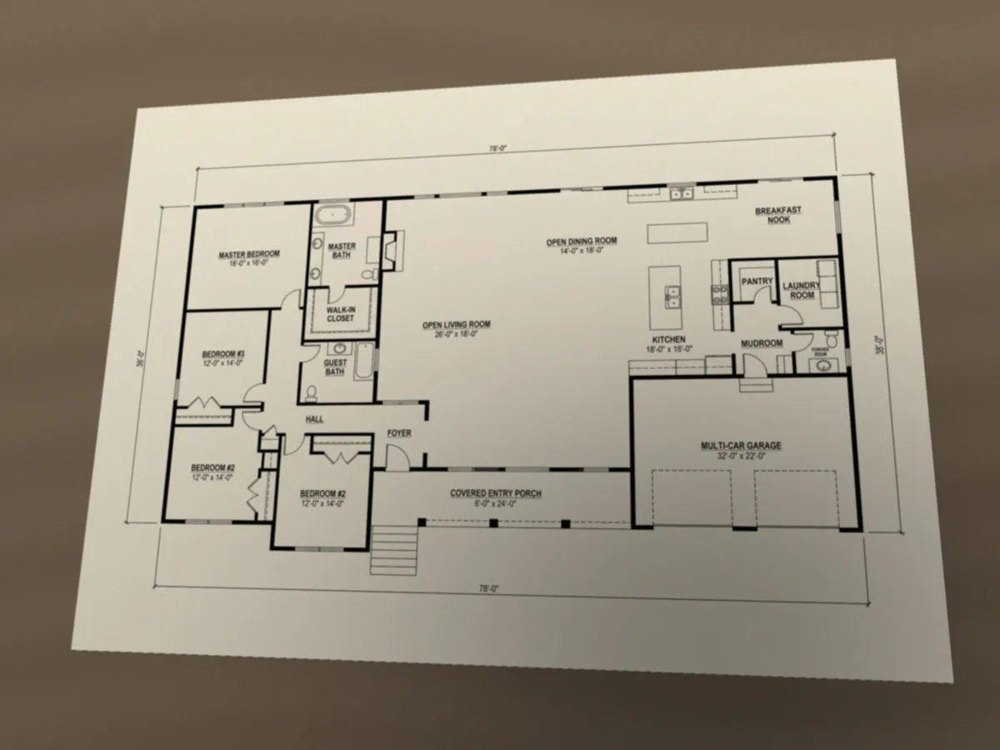

Which plan to send
The plan your architect gave you is usually the right one. This page shows what works, what the app turns away before anything is spent, and what you do not need to do.
Send the file, not a picture of it
PDF, PNG, JPG or WebP. From CAD, such as a DWG, print the sheet to PDF. If the PDF has several pages, you pick the page. If one sheet shows more than one floor, you pick the floor on the sheet. An image needs 800px or more on its short side.
Presentation plan or construction sheet, both work
Room names and sizes are copied from the drawing as it writes them, and you confirm each one before anything renders. Nothing is measured or calculated.

A presentation plan with sizes in each room. Each size is read for you to confirm.

Sizes written in inches. They are copied as your plan writes them, not converted.

A construction sheet with dimension chains. A room with no size printed stays blank until you type one in.
What the app turns away, in its own words
The upload is checked on your computer before anything is sent or spent. These two examples were made from the first plan above; the messages are the ones the app shows for them.

A small copy, such as one saved from a listing or an email. Up close, the bedroom’s 18′-0″ can pass for 10′-0″.

A phone photo of the printed sheet. Straight walls lean with the angle, and the shadow hides lines. Ask your architect for the PDF instead.
What you do not need to do
- Clean up the drawing. Notes, dimension chains, furniture and hatching can stay; the review screen is where you fix what the tracing gets wrong.
- Ask for a special export. The sheet as your architect issued it is the one to send.
- Send a bigger file. Past 800px on the short side, a larger image is not read better.
- Add sizes the plan does not show. Leave them blank, or type them on the review screen if you have them from your architect.
You check it before anything is spent
After upload, every room and size is on the review screen for you to confirm or correct, for free. The only paid step is the render. See how it works.